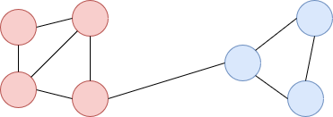
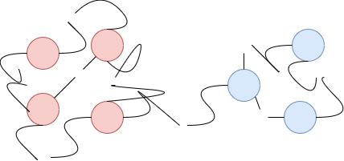
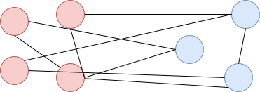

Modularity Optimization
Contents
Modularity Optimization#
Modularity ist ein Maß, dass angiebt wie sehr eine gegebene Menge an Communities voneinander separiert sind.
Modularity bezieht sich immer auf ein partitionierendes Clustering, d.h. jeder Knoten gehört zu genau einer Community.
Berechnung von Modularity#
Für ein gegebenes Clustering \(C\) berechnet sich die Modularity als:
Anteil der Kanten die sich innerhalb von Communities befinden - Anteil Kanten, die man zufällig innerhalb einer Community erwarten würde.
Beispiel: Ein Netzwerk mit zwei Communities
{kind=link}
Es befinden sich acht Kanten innerhalb von Communities und eine zwischen Communities.
Random Rewiring: Würde man die Kanten in der Mitte durchscheiden und die Enden neu verbinden, entsteht ein neues Netzwerk in dem jeder Knoten jedoch seinen ursprünglichen Degree behält.
 {kind=link}
{kind=link}
In diesem Beispiel befinden sich nur noch drei Kanten innerhalb von Communities und fünf dazwischen.
Die Anzahl von existierenden Kanten zwischen zwei Knoten \(i\) und \(j\) ist \(A_{i,j}\), wobei \(A\) die Adjazenzmatrix des Netzwerks ist.
Nach einem Rewiring wie oben beschrieben würde man \(\frac{d_i d_j}{2|E|}\) Kanten erwarten.
Definition Modularity \(Q\)
\(Q = \frac{1}{2|E|} \sum_{i,j \in V} \left[A_{i,j} - \frac{d_i d_j}{2|E|} \right] \delta(c_i, c_j)\)
Der Louvaine Algorithmus#
{kind=link}
Jeder Knoten bildet eine einzelne Community.
Verschmelze Communities, so dass die gesamte Modularität maximiert wird.
Reduziere das Netzwerk indem jede Community ein eigener Knoten wird. Kanten werden zu gewichteten Kanten zusammengefasst.
Wiederhole die Schritte 2 und 3 bis keine Verbesserung mehr erzielt werden kann.